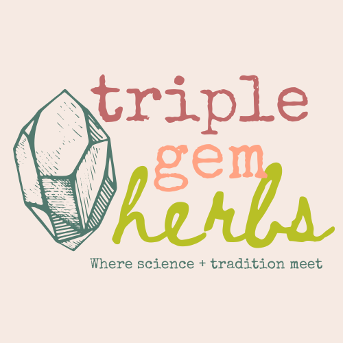

Botanist. Herbalist. Educator.
I'm Jasmine Zenderland — a botanist, educator, and herbalist working on California's far northern coast. My work blends botanical science with traditional plant knowledge to help people build a more confident, connected relationship with herbs.
I believe there is true medicine at the intersection of traditional knowledge and scientific inquiry.
Through consultations and botanical education, I support two kinds of people: those who want guidance supporting their health with herbs, and those who want to develop their own herbal practice. Often, they're the same person.
My work is rooted in reverence for nature and herbal traditions, and I acknowledge the profound healing available to those who seek connection with plants.
Education
- B.S. in Botany
- M.A. in Ecology & Evolutionary Biology
Published Work
- HerbalEGram, American Botanical Council — 2024
- Economic Botany, Springer — 2019
- AAAS / MOST Policy Initiative — 2023
Experience
- 10+ years working with medicinal plants
- Ecological restoration & conservation
- Field-based botanical education
Working with Jasmine was such a pleasure. Through her recommendations and provision of herbal supplements in the forms of teas, tinctures, and capsules, she helped me to see real improvement with multiple chronic health issues I was experiencing, in just a few sessions. She is kind, welcoming, generous, supportive, and reliable. She will work with you to create a plan that is right for you and that feels doable and comfortable. I highly recommend her for anyone looking to take a more natural and holistic approach to their health and well being.
— Triple Gem Herbs client
Field Photos